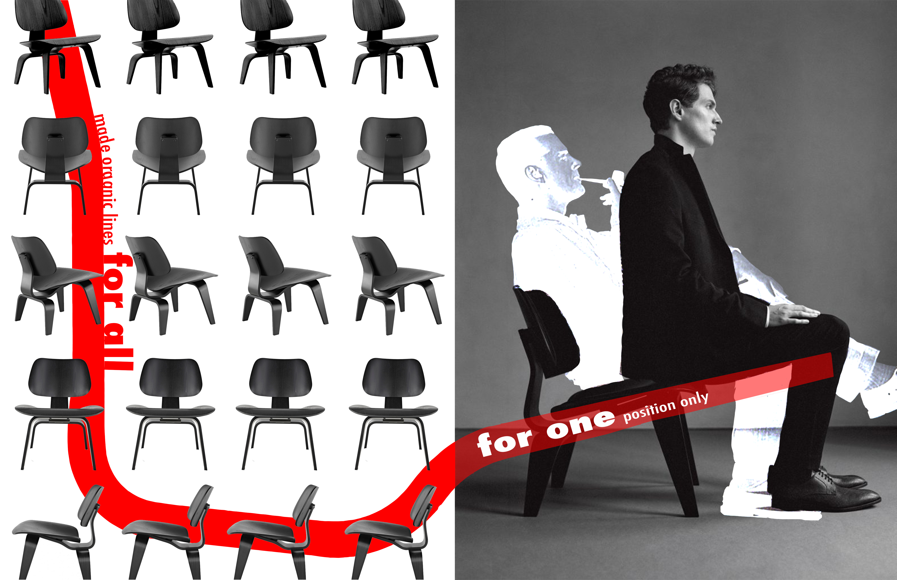

Hi! My name is Zoe, currently majoring in Cognitive Systems and minoring in Urban Studies at the University of British of Columbia.
I am interested in the design of smart systems, both artificial and natural, most particularly, in deceptively "dumb" systems that behave intelligently and robustly.
I am driven by my passion for understanding and consolidating the often conflicting intersections between the values and frameworks of technology and society,
addressing the types of issues this tension can produce, from unintuitive UX to serious ethical concerns.
I approach design through the lenses of psychology, philosophy, linguistics, and computer science.
Maneuvering between value systems, resolving issues through active shifts in perspective is central to my design thinking.
|
|  |